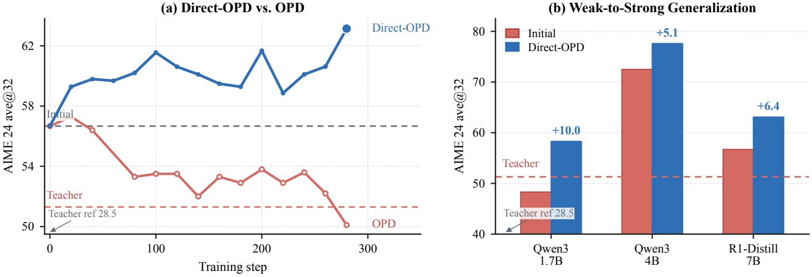
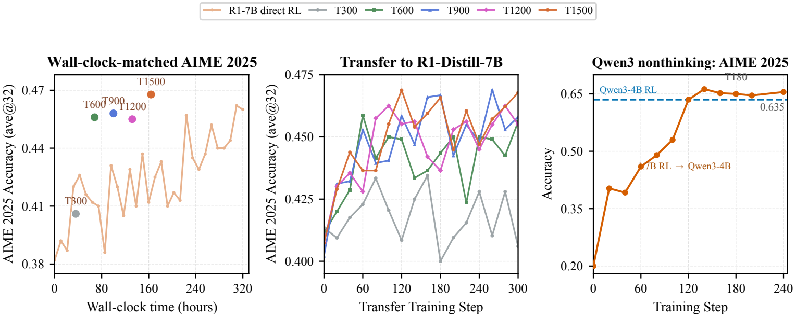
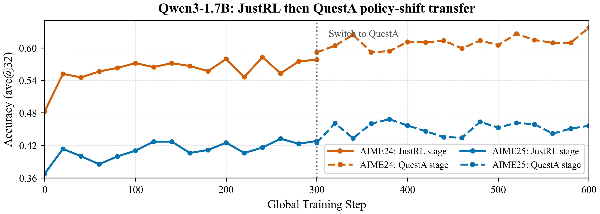

核心判断：它把一次小模型 RL 变成可复用的“奖励资产”
Direct-OPD 的真正创新，是从“复制一个训练好的模型”转向“提取一次训练过程造成的相对变化”。普通 OPD 让学生匹配 post-RL 教师的最终分布；Direct-OPD 则用同一个弱模型的 post-RL 与 pre-RL checkpoint 做差，只迁移 RL 写入模型的方向。这个差分削弱了弱模型原有能力上限的干扰，因此即使学生起点已经强于教师，仍可能继续获益。
最显眼的结果
Qwen3-1.7B 在 AIME 2024 上由 48.3 提升到 58.3。
严格 weak-to-strong
五个主迁移设置中，严格“学生起点高于 post-RL 教师”的是 JustRL → Qwen3-4B 与 R1-Distill-7B。
端到端算力节省
按论文的 matched route 计入小模型 RL 后，约 5,152 对 10,240 A100 GPU-hours。
证据边界
主证据集中在 AIME 2024/2025；标题中的 “generalization” 主要是跨模型规模与家族，不是跨任务泛化。
小模型不是“答案老师”，而是一个便宜的 RL 探索载体；两份 checkpoint 的概率比值，像一个可迁移的训练时 reward adapter。
1. 它到底在解决什么问题？
1.1 RLVR 的瓶颈不是奖励函数，而是每个大模型都要重新探索
RLVR（Reinforcement Learning with Verifiable Rewards）对数学、代码等可自动验答案的任务很有效，但它的成本跟被训练模型直接绑定：当前策略必须持续生成大量 rollout，稀疏的最终正确/错误信号再反向影响策略。模型越大，每条 rollout 越慢；每升级一个基础模型，如果都从头跑 RL，post-training 会逐渐成为新的 scaling bottleneck。
论文提出的经济学假设是：RL 找到的“改进方向”可能比产生这个方向的模型更可迁移。如果先在 1.5B 模型上做便宜探索，再把这一方向交给 4B 或 7B 学生，强模型就不必用昂贵 rollout 重新发现同样的 credit assignment。
1.2 为什么直接蒸馏 post-RL 弱教师会失败？
post-RL 弱教师的最终策略同时混着两类东西：
- 有用部分：RL 根据可验证奖励提高或压低了哪些推理动作；
- 无用甚至有害部分：1.5B 模型本来就有的容量上限、表达习惯、错误模式与概率偏好。
标准 OPD 在学生自己访问的状态上最小化 \(D_{\mathrm{KL}}(\pi_\theta\Vert\pi_T)\)。它虽然是 on-policy 的，却仍在复制教师的绝对分布。当 R1-Distill-7B 起点为 56.7、JustRL-1.5B 教师只有 51.3 时，普通 OPD 把学生拖到约 50；这不是监督信号完全无用，而是信号载体把“RL 改进”和“弱模型上限”绑在了一起。

2. 先把它放进正确的坐标系
| 方法 | 学生在哪些状态上学习 | 监督对象 | 主要优点 | 主要风险 |
|---|---|---|---|---|
| 离线 SFT / response distillation | 教师生成的数据 | 答案或完整轨迹 | 简单、稳定 | distribution shift；容易复制教师错误与风格 |
| 标准 OPD | 学生自己的 rollout | post-RL 教师的绝对 token 分布 | 减少状态错配，监督稠密 | 教师比学生弱时会导入容量上限 |
| 目标模型直接 RLVR | 目标模型自己的 rollout | 稀疏可验证 outcome reward | 信号直接、无需教师 | 大模型 rollout 与探索昂贵 |
| Direct-OPD | 学生自己的 rollout | 弱教师 RL 前后 log-ratio | 稠密、可跨规模、推理时无额外模型 | 继承 RL shift 的偏差，且要求该比值在学生状态上可靠 |
| weight-space task arithmetic | 不以 rollout 为核心 | 参数差 | 可直接合并权重 | 通常要求架构与参数空间可对齐 |
它与 proxy tuning / contrastive decoding 也有直觉上的亲缘关系：后者在推理时把“专家 logits − 基线 logits”加到目标模型上；Direct-OPD 则把“post-RL logits − pre-RL logits”变成训练信号，只在训练时运行两位教师评分，最后把方向吸收到学生参数里。
3. 方法机制：从 checkpoint 差分恢复 reward-like signal
3.1 第一步：把教师的 RL 前后变化写成 policy shift
记弱教师在 RL 前的 checkpoint 为 \(\pi_{T_{\mathrm{ref}}}\)，RL 后为 \(\pi_T\)。对同一问题 \(x\) 与回答 \(y\)，论文定义：
如果 RL 让一个回答更可能出现，\(\Delta_T\) 为正；如果 RL 抑制它，\(\Delta_T\) 为负。关键是 pre-RL 偏好被相减掉了：学生看到的不是“弱模型喜欢什么”，而是“外部 RL 信号让弱模型改变了什么”。
3.2 为什么这个差分可以解释成隐式奖励？
对带 KL 正则的 RL，若 reward 为 \(r\)、参考策略为 \(\pi_{\mathrm{ref}}\)、KL 温度为 \(\beta\)，理想最优策略满足：
移项可得：
对同一 prompt，\(\log Z(x)\) 是与回答无关的常数，所以策略/参考策略的 log-ratio 在排序意义上恢复了 reward。DPO 用这个恒等式从偏好拟合策略；Direct-OPD 反向使用它：手上已经有 pre/post-RL checkpoint，于是从策略差里读回 reward-like signal。
精确恒等式依赖“KL-regularized RL 的最优策略”假设；实际教师往往是有限步 GRPO checkpoint，论文附录中的部分 RL 设置甚至把 KL coefficient 设为 0。更稳妥的理解是：\(\Delta_T\) 是一个有经验支持的 policy-improvement direction，而不是已校准、可跨设置直接比较数值大小的真实 reward。
3.3 第二步：用教师 shift 对学生自己的状态做指数倾斜
学生初始化为 \(\pi_S\)，训练策略为 \(\pi_\theta\)。理想序列级目标是：
它的理想最优解可以写成：
这条式子把论文的直觉说得最清楚：学生保留自己的底座能力，只被教师 RL 的概率比值乘性地倾斜。教师本身的绝对概率不进入最终目标；如果 RL 没改变某一行为，比例接近 1，学生也几乎不被推动。
3.4 从序列目标到真正执行的 token-level 训练
自回归策略把序列 shift 分解到每个前缀 \(s_t=(x,y_{\lt t})\)：
实现没有对每个 sampled token 做高方差 Monte Carlo 更新，而是在学生当前 top-\(k\) 动作集合 \(S_t\) 上做解析期望。学生 top-\(k\) 概率重归一化为 \(\bar p_t\)，并对权重 stop-gradient：
论文默认 \(k=16\)。这相当于：轨迹仍由学生抽样，保证 state distribution 是 on-policy；但每个访问状态里，不只用实际抽中的一个 token，而是让两份教师 checkpoint 同时给学生最可能考虑的 16 个 token 打“RL 前后变化分”。
3.5 一个极简例子
假设某个数学推理前缀下，学生 top-3 候选 token 的重归一化概率为 \(0.5,0.3,0.2\)。教师 RL 前后 log-ratio 分别为 \(+0.6,-0.2,-1.0\)。对应的局部加权信号是 \(+0.30,-0.06,-0.20\)：第一种推理延续被增强，后两种被削弱。注意这不是让学生把概率改成教师概率；教师甚至可以完全不把这些 token 放进自己的 top-\(k\)，只要它对这些 token 的 before/after 比值仍有意义。
3.6 自适应 KL：控制的不是“离底座多远”，而是“奖励是否仍可信”
不同 teacher pair 的 \(\Delta_T\) 尺度不可比较，因为它混着教师原 reward 尺度与未知 KL budget。论文用一个非常轻量的符号控制器：
默认 \(\epsilon=0.01\)，范围 \([0.5,2.5]\)。batch 平均 shift 为正时增大 KL，避免持续追逐局部高 reward；为负时减小 KL，让学生更容易离开被 RL 压低的动作。它不是传统“把 KL 调到目标值”的 controller，而是在试图把 rollout 留在 teacher/reference 比值仍可靠的区域。
4. 实验到底评估了什么？
4.1 任务、输入、输出与指标
| 项目 | 论文设置 | 应该怎样理解 |
|---|---|---|
| 训练任务 | Skywork-OR1-RL-Data 数学子集；DAPO 风格逐步解题 prompt | 训练信号仍是数学推理分布，不是开放域通用能力 |
| 评测集 | AIME 2024 与 AIME 2025，各 30 道题 | 高难竞赛数学，小样本题集但每题多次采样 |
| 模型输出 | 完整推理文本 + 最终答案 | 最终答案用规则验证；训练时 Direct-OPD 不直接查询这个稀疏 reward |
| 采样 | 每题 32 次；temperature 0.7；top-p 0.95 | 每个 benchmark 共 960 条生成 |
| ave@32 | 32 次采样的平均正确率 | 不是“32 次里至少一次答对”的 pass@32 |
| 评测最大长度 | 31,744 tokens | 明显长于训练的 2,048-token rollout，用来测试短前缀训练是否影响长推理 |
默认 Direct-OPD 训练为 300 steps、rollout \(n=4\)、top-\(k=16\)、learning rate \(10^{-6}\)、训练 response 上限 2,048。论文还报告用 DAPO-Math-17K 替换训练集后趋势相似，但没有给出同等完整的主表。
4.2 主结果：哪些设置真的是弱教师教强学生？
| Teacher pair | 学生 | Benchmark | post-RL 教师 | 学生初始 | Direct-OPD 后 | 增益 | 严格 W2S？ |
|---|---|---|---|---|---|---|---|
| R1-1.5B → JustRL-1.5B | Qwen3-1.7B | AIME24 / 25 | 51.3 / 37.5 | 48.3 / 36.8 | 58.3 / 43.2 | +10.0 / +6.4 | 否，教师略强 |
| R1-1.5B → JustRL-1.5B | Qwen3-4B | AIME24 / 25 | 51.3 / 37.5 | 72.5 / 65.6 | 77.6 / 68.8 | +5.1 / +3.2 | 是 |
| R1-1.5B → JustRL-1.5B | R1-Distill-7B | AIME24 / 25 | 51.3 / 37.5 | 56.7 / 40.5 | 63.1 / 48.8 | +6.4 / +8.3 | 是 |
| Nemotron-1.5B → QuestA-1.5B | Qwen3-1.7B | AIME24 / 25 | 72.5 / 62.3 | 48.3 / 36.8 | 59.0 / 43.1 | +10.7 / +6.3 | 否，教师明显更强 |
| Nemotron-1.5B → QuestA-1.5B | R1-Distill-7B | AIME24 / 25 | 72.5 / 62.3 | 56.3 / 39.5 | 61.2 / 44.0 | +4.9 / +4.5 | 否，教师明显更强 |
因此，论文最扎实的标题级证据不是“所有弱教师都能教所有强学生”，而是：同一个 JustRL policy shift 能继续改善两个已经超过教师 endpoint 的学生。QuestA 组的意义不同——作者自己也明确说它不是严格 W2S，而是在验证 signal 能否跨训练数据、训练管线与 checkpoint family。

4.3 “比直接 RL 便宜”要分边际成本与总成本
论文给出两种容易被混在一起的成本叙事：
- 边际复用成本：如果小教师的 RL checkpoint 已存在，把 shift 迁移到 Qwen3-1.7B 只需约 4 小时 × 8 A100，即约 32 GPU-hours；
- 端到端发现成本：如果必须先训练小教师，就要把小模型 RL 算进去。
| 训练路线 | RL discovery | Direct-OPD transfer | 约 A100 GPU-hours | 解释 |
|---|---|---|---|---|
| R1-Distill-7B 直接 RL | 320 小时 × 32 A100 | 无 | 10,240 | 大模型自己重新探索 |
| R1-Distill-1.5B RL → R1-Distill-7B | 160 小时 × 32 A100 | 4 小时 × 8 A100 | 5,152 | 论文设置下约省 49.7%，同时验证分数更高 |
| 已有 teacher pair 时的新增学生 | 已沉没 / 可摊销 | 4 小时 × 8 A100 | 32（边际） | 这才是 Direct-OPD 最强的规模经济来源 |
所以，“4 小时完成 RL 能力迁移”是真的，但它描述的是已有 teacher pair 后的边际成本；若从零开始，论文内部更公平的比较是约 5,152 对 10,240 GPU-hours，而不是只拿 32 GPU-hours 对完整大模型 RL。

4.4 顺序组合：两个 policy shift 可以继续叠加，但“可组合”仍是弱结论
Qwen3-1.7B 先接受 JustRL shift，再接受 QuestA shift：
| 阶段 | AIME24 | AIME25 | 相对初始 |
|---|---|---|---|
| 初始 | 48.3 | 36.8 | — |
| 完成 JustRL shift | 58.3 | 43.2 | +10.0 / +6.4 |
| 再完成 QuestA shift | 63.8 | 46.8 | +15.5 / +10.0 |

4.5 机制诊断：成功不是简单复制 top-k，也不是 reward 越大越好
低 overlap 也能迁移
与教师思维 pattern 对齐的 R1→R1 场景进入较高 top-k overlap；跨 pattern 场景保持较低 overlap 仍有增益，说明绝对分布模仿不是唯一载体。
2k 比更长更稳
2k rollout 训练产生的改变延伸到约 16k 测试位置；step 40 时 2k 设置约 48.8，6k 反而约 45.6，长前缀可能读取到 off-distribution 噪声。
KL 是可靠性闸门
不同 pair 的最佳固定 KL 不同；更高 dense reward 不必然对应更好验证。adaptive KL 会把 batch mean shift 拉回接近零的平衡区。
这些分析支持“policy shift 在学生 support 内排序动作”的解释，但还不是因果证明：低 top-k overlap 不排除更高层行为模仿，entropy 未塌缩也不等于没有 reward exploitation；它们是相互一致的诊断，而不是唯一机制的排他性证据。
5. 术语表：读懂这篇论文最少需要什么？
6. 局限、隐含前提与容易被标题遮住的事实
主结果只有 AIME 2024/2025，训练也是数学数据。尚无代码、科学问答、agent、指令遵循、安全偏好或开放式 reward 的迁移证据。“generalization” 当前主要指跨模型规模/训练家族，而不是跨领域。
JustRL→Qwen3-4B 与 JustRL→R1-Distill-7B 是严格 weak-to-strong；Qwen3-1.7B 初始略弱于 JustRL；QuestA 教师明显强于两个学生，只能证明跨 pipeline 的 shift transfer。
序列级推导假设 KL-regularized RL 的理想最优策略；实现则使用有限 checkpoint、zero-discount immediate token surrogate、student top-k 截断与 detached 权重。论文证明了理想目标的结构，却没有证明最终近似保持同一最优解。
算法直接拿学生 top-k token id 让两位教师评分，隐含要求 tokenizer / vocabulary 兼容或存在可靠映射。论文所谓跨 family 仍处于 Qwen 系兼容生态，没有展示 Llama ↔ Qwen 这类异构词表迁移。
checkpoint 差分消掉了 pre-RL 偏好，却会保留 RL 造成的全部变化：真正推理提升、长度偏差、格式偏差、reward hacking、数据记忆、优化器漂移都在其中。Direct-OPD 能把好 shift 稠密化，也可能把坏 shift 高效放大。
每题 32 次采样降低了生成噪声，但 AIME 每年只有 30 题，论文未报告训练多 seed、置信区间或显著性。曲线本身波动数个百分点；较小的 +3.2 增益需要比 +10.0 更谨慎地解释。
只展示 JustRL→QuestA 一个顺序，且仍在同一数学指标上。没有反向顺序、相互冲突的 shift、跨领域遗忘、并行合成或长期稳定性实验。
官方仓库公开 patched verl、reward/KL/指标测试、三份验证 parquet、一个 JustRL→Qwen 启动入口与六个结果 checkpoint；但模型权重与 105,055 行主训练 parquet 需另取，完整论文所有实验没有统一脚本。发布脚本与附录默认值也存在版本差异，例如 train batch 128 对论文表格 64、验证长度 32,768 对 31,744。
如果 teacher/reference 的 log-ratio 在学生访问的状态上没有“改进方向”含义——例如两位教师都认为这些状态极低概率、RL shift 已 reward hack、词表不兼容、或长前缀严重 off-distribution——Direct-OPD 会把一个数值很大的错误信号当成稠密监督。KL、短 horizon 与持续验证不是调参装饰，而是安全边界。
7. 我的 insight：这篇论文真正打开的是“可复用 RL 方向库”
Insight 1：小模型 RL 是 reward compiler，不只是廉价训练
传统叙事把小模型视为低成本但低上限的最终产品；Direct-OPD 把它改造成一个把稀疏环境奖励编译进策略比值的中间层。环境先通过小模型 rollout 完成昂贵的 credit assignment；pre/post checkpoint pair 再把结果暴露为 token 级 dense signal。真正可复用的资产不再是单个模型，而是：
如果同一个 shift 能服务多个更大模型、多个版本或多个部署形态，那么 teacher RL 成本可以被摊销；这比单次实验里约 2 倍的端到端节省更有战略意义。
Insight 2：它是 policy space 中的乘法 task vector
weight-space task arithmetic 做 \(\theta_{\mathrm{base}}+\Delta\theta\)；Direct-OPD 的理想形式则做：
这解释了为什么它可以跨参数规模：它不要求权重坐标对齐，只要求行为/action space 可以被共同评分。也解释了顺序组合的理想图景：
在无限精确、固定状态分布的理想世界里，多个 log-shift 相加近似像可组合的 policy task vector；现实训练中，on-policy 状态、KL 锚点、top-k 截断与有限步优化都会让顺序产生影响。因此论文的 composition 结果更像“第一张可行性照片”，还不是成熟代数。
Insight 3：Direct-OPD 把 RL 扩展问题从“算力”改写成“shift 选择与路由”
一旦有多组 teacher pair，新的系统问题会出现：
- 如何判断某个 shift 对当前学生、当前 prompt、当前前缀是否可靠？
- 哪些 shift 可以相乘，哪些会冲突或互相抵消？
- 能否按 token、任务或能力维度对 shift 做 gating，而不是整段训练统一使用？
- 能否在小模型群上并行探索不同 reward，再把高价值方向路由给昂贵大模型？
这意味着未来的 post-training 基础设施可能不只管理 datasets、reward models 与 checkpoints，还要管理一套带来源、尺度、support、可靠性与冲突关系的 policy-shift registry。
Insight 4：最危险的地方也是最高效的地方——它会把偏差一起稠密化
RLVR 的 outcome reward 很稀疏，但至少语义清晰；Direct-OPD 把一次 RL 的所有结果压进每个 token 的 log-ratio。这样 credit assignment 更便宜，却也让“为什么这个 token 被提高”不可见。一个格式 hack、长度偏好或数据泄漏，一旦被写入 \(\Delta_T\)，就可能比原始稀疏 reward 更高效地扩散到多个学生。
因此真正需要的新评测不是只看最终 accuracy，而是审计 shift 的因果成分：把格式、长度、答案 token、推理 token、已知 reward hack 与 OOD 前缀分开测。没有这层审计，policy-shift library 也可能变成 policy-bias library。
Insight 5：这项工作最适合作为 post-training 中间层，而不是 RL 的替代品
Direct-OPD 仍然需要至少一次有质量的 RL 来产生 teacher pair；它没有凭空创造探索，也没有解决开放式 reward 的验证问题。最合理的系统位置是：
在小模型上快速试 reward、数据与 RL recipe；对可靠 run 保存 pre/post pair；把成功方向用 Direct-OPD 迁移给多个昂贵模型；最后再对少数高价值目标做短程直接 RL 校准。
8. 如果要在工程中尝试，应该怎么判断“值得做”？
适用条件
- 目标任务有可靠 RL 结果，且小模型 RL 确实从 reference 获得了可复现增益；
- 目标学生 rollout 很贵，teacher pair 的评分成本相对低；
- 教师与学生 token/action space 可对齐；
- 同一个能力方向计划迁移到多个学生或多个模型版本，能够摊销 teacher RL；
- 有独立验证集持续监控，不能只最大化 dense shift reward。
最低监控面板
效果
独立 outcome accuracy、多 seed、checkpoint 选择规则、长短 rollout 泛化。
分布
student KL、actor entropy、teacher/reference support、top-k overlap、长前缀 OOD 程度。
信号
weighted shift mean/variance、正负比例、长度分桶、格式 token 与答案 token 分解。
最能决定论文结论能否外推的六个后续实验
- 跨任务：数学 shift 是否能迁移到科学推理、代码、agent 或 instruction following；
- 跨 tokenizer：异构词表通过字符串级对齐、共享 latent action 或映射后是否仍成立；
- 严格总算力对齐：固定总 GPU-hours、数据、rollout tokens 与最终评测预算比较 Direct-OPD 和直接 RL；
- 多 seed 与置信区间：尤其验证 +3 左右的小增益是否稳定；
- 坏 shift 压力测试：故意制造 reward hacking、长度偏差或错误 verifier，观察偏差如何跨规模传播；
- 组合代数：反向顺序、并行合成、冲突 shift、跨域遗忘，以及 ideal sequence objective 对 zero-discount top-k surrogate 的消融。
我把这篇论文评为“机制新颖、实验信号强、外推边界仍窄”。它对 post-training 经济学的启发大于当前 benchmark 覆盖：最重要的不是 AIME 再涨几个点，而是证明了训练过程产生的相对 policy change 可能成为跨规模复用的一等资产。
证据边界与资料索引
本文以 arXiv v2 正文与附录、作者项目页、官方代码仓库和模型集合为主要证据，并核对了主公式、表 1–4、图 1–11、训练入口与核心 reward/KL 实现。论文报告的全量 GPU 训练未在独立环境中复跑，因此对性能数字的判断是“原始材料内交叉一致”，不是第三方复现实验。官方代码目前覆盖一个主要训练入口，不能替代整篇论文所有设置的完整复现清单。
- Weak-to-Strong Generalization via Direct On-Policy Distillation（arXiv 页面）
- 论文 PDF v2
- Direct-OPD 作者项目页
- Direct-OPD 官方代码仓库
- Direct-OPD 官方模型集合
- Rethinking On-Policy Distillation of Large Language Models
- Direct Preference Optimization
- Weak-to-Strong Generalization: Eliciting Strong Capabilities with Weak Supervision
- Weak-to-Strong Preference Optimization
- Tuning Language Models by Proxy